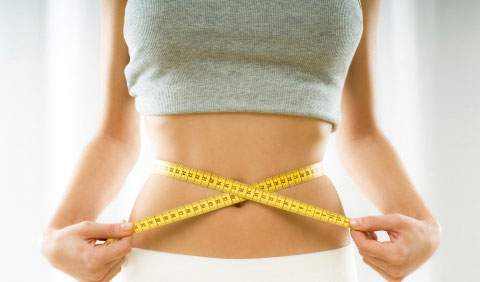
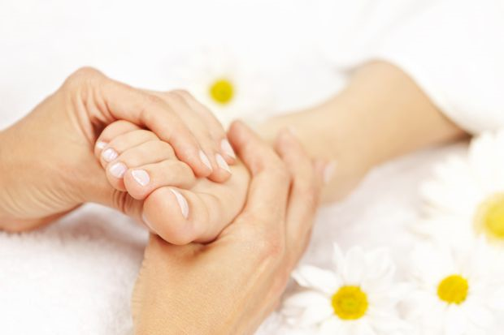
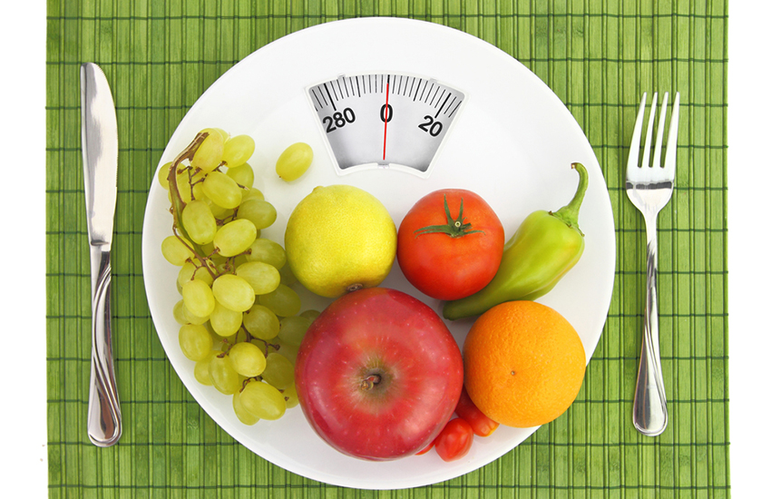

Odchudzanie
Hasło DIETA dział na naszą podświadomość jak czerwona płachta na byka! Od razu mamy zakodowane że tego nie można, to jest kaloryczne, to jest tłuste! No i efekt jest taki że po miesiącu, dwóch czy trzech katowania się, choć schudniemy to wracamy to swoich nawyków żywieniowych i do wcześniejszej wagi…
No i po co nam takie diety? Szybkie schudnięcie + szybkie przytycie = rozregulowanie układu trawiennego, wypadające włosy, łamiące się paznokcie, rozstępy itp. Cały sekret tkwi w zmianie nawyków żywieniowych na zawsze – to jest klucz do sukcesu!
Nie możemy zapomnieć o prawidłowej pracy naszego organizmu a w szczególności gruczołów wydzielania wewnętrznego tj.:
- Przysadki mózgowej, która stoi na straży wszystkich naszych gruczołów wydzielania wewnętrznego
- Przytarczyc i tarczycy, które regulują przemianę materii, podnoszą aktywność fizyczną, kontrolują poziom cholesterolu, kontrolują wagę ciała i gospodarkę mineralną
- Nadnerczy, które powodują zwiększenie przemiany materii, regulują przemiany cukrów, działają przeciwalergicznie, kontrolują związki potasu i sodu
- Trzustki, która odpowiada za utrzymanie prawidłowego poziomu cukrów w organizmie
- Jajników i jąder
Refleksoterapia pomaga w regulacji współpracy tych gruczołów – a ich prawidłowa współpraca jest pierwszym krokiem do sukcesu. Bardzo często słyszę po serii zabiegów: „Wie Pani co? Ja schudłam!” Ale pamiętajmy nikt za nas „roboty nie zrobi” zabiegi + racjonalne odżywianie mogą zdziałać naprawdę dużo.
  